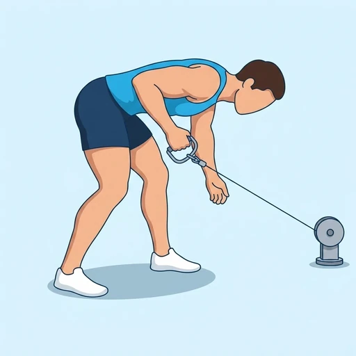

Cable Tricep Kickback
An isolation movement performed hinged forward, extending the elbow against cable resistance to work the triceps.
Upper arms · Cable Machine · Intermediate


Muscles worked by the Cable Tricep Kickback
Primary
Secondary
Also called: tricep, triceps, triceps brachii, horseshoe, tris.
Equipment
Also called: cable pulley, functional trainer, cable crossover, cable column, cable station, pulley machine.
How to do the Cable Tricep Kickback
- Attach a handle to a low cable and hinge forward at the hips.
- Tuck your upper arm against your side with elbow bent 90 degrees.
- Extend your elbow to push the handle back behind you.
- Squeeze your triceps at the end of the movement.
- Return under control. Complete reps on one side, then switch.
Form tips
- Move only your forearm; keep the upper arm completely still.
- Avoid rounding your back while holding the hinged position.
- Use a light weight to reach full lockout without swinging.
At a glance
| Body part | Upper arms |
|---|---|
| Category | Strength |
| Force type | Push |
| Mechanic | Isolation |
| Difficulty | Intermediate |
| Equipment | Cable Machine |
| Goals | Hypertrophy |
| Tags | Knee safe, Shoulder safe, No axial load, Lower back safe |
| MET | 5.0 (metabolic equivalent, for calorie estimates) |
| Unilateral | No |
| Bodyweight | No |
| Dataset id | cable-tricep-kickback |
Cable Tricep Kickback in German & Spanish
| German | Kabelzug Trizeps-Kickback |
|---|---|
| Spanish | Patada de Tríceps con Cable |
Descriptions, instructions and tips ship in all three languages in the JSON.
Related exercises
Exercise data (JSON)
The record below is exactly what exercises.json ships for this exercise — names, descriptions, instructions and tips in English, German and Spanish.
{
"id": "cable-tricep-kickback",
"name_en": "Cable Tricep Kickback",
"name_de": "Kabelzug Trizeps-Kickback",
"name_es": "Patada de Tríceps con Cable",
"description_en": "An isolation movement performed hinged forward, extending the elbow against cable resistance to work the triceps.",
"description_de": "Ein Kickback am Kabelzug für den Trizeps, ausgeführt in der Vorbeuge mit fest am Körper fixiertem Oberarm.",
"description_es": "Una extensión de tríceps en polea baja, realizada con el torso inclinado, que mantiene la tensión en el bloqueo final.",
"category": "strength",
"force_type": "push",
"mechanic": "isolation",
"difficulty": "intermediate",
"equipment": "cable",
"body_part": "upper_arms",
"primary_muscles": [
"triceps_brachii"
],
"secondary_muscles": [
"posterior_deltoid"
],
"goals": [
"hypertrophy"
],
"tags": [
"knee_safe",
"shoulder_safe",
"no_axial_load",
"lower_back_safe"
],
"variation_group": "tricep-kickback",
"is_unilateral": false,
"is_bodyweight": false,
"instructions_en": [
"Attach a handle to a low cable and hinge forward at the hips.",
"Tuck your upper arm against your side with elbow bent 90 degrees.",
"Extend your elbow to push the handle back behind you.",
"Squeeze your triceps at the end of the movement.",
"Return under control. Complete reps on one side, then switch."
],
"instructions_de": [
"Befestige einen Griff am unteren Kabelzug und beuge dich an den Hüften vor.",
"Halte den Oberarm eng an der Seite, Ellbogen im 90-Grad-Winkel.",
"Strecke den Ellbogen, um den Griff nach hinten zu drücken.",
"Spanne den Trizeps am Ende der Bewegung an.",
"Kontrolliert zurück. Alle Wiederholungen auf einer Seite, dann wechseln."
],
"instructions_es": [
"Engancha un handle a la polea baja e inclínate hacia adelante desde las caderas.",
"Pega la parte superior del brazo al costado con el codo flexionado a 90 grados.",
"Extiende el codo para empujar el handle hacia atrás.",
"Aprieta el tríceps al final del movimiento.",
"Vuelve de forma controlada. Completa las repeticiones de un lado y luego cambia."
],
"tips_en": [
"Move only your forearm; keep the upper arm completely still.",
"Avoid rounding your back while holding the hinged position.",
"Use a light weight to reach full lockout without swinging."
],
"tips_de": [
"Bewege nur den Unterarm, der Oberarm bleibt ruhig fixiert.",
"Halte den Rücken in der Vorbeuge gerade und den Rumpf angespannt.",
"Lass das Handgelenk in gerader Verlängerung des Unterarms."
],
"tips_es": [
"Evita que el codo caiga o se abra durante la extensión.",
"Mantén la espalda recta mientras el torso está inclinado.",
"Usa un peso ligero para no recurrir al impulso."
],
"met": 5.0,
"images": {
"flat": {
"start": "images/flat/cable-tricep-kickback-start.webp",
"peak": "images/flat/cable-tricep-kickback-peak.webp"
}
}
}Fetch just this exercise
const { exercises } = await fetch(
"https://exercise-dataset.com/exercises.json"
).then(r => r.json());
const ex = exercises.find(e => e.id === "cable-tricep-kickback");Free for personal and commercial in-app use with attribution (“Exercise data by RepDB”) — see the license and ready-made attribution snippets. Redistributing the data as a dataset or API is not permitted.